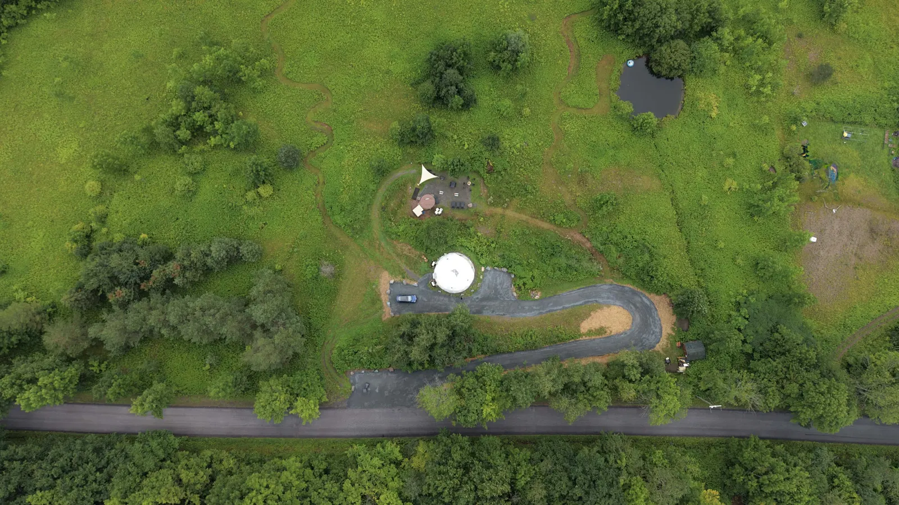

The dome’s own home on the web, built from what it already is: 252 guests’ own words, the summer drone shoot, and the thirteen places on the property. It’s a starting point, made to be walked and marked up by you.
The seven digits we gave you. You’ll stay signed in on this device for 30 days.
Built by Ashrey, with Claude. What you leave goes to Ashrey and Claude only.